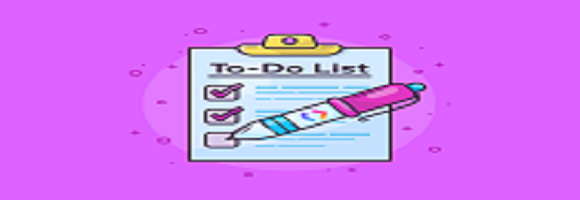
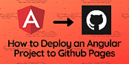
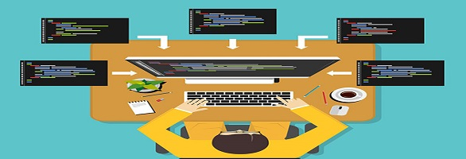

Build A ToDo List Application Using Angular, .Net 5.0 Web API And Microsoft SQL Server
This article shows how to build an Angular front end of a ToDo list application....

Build a ToDo list application using .Net 5.0 Web API and Microsoft SQL Server
This article shows how to build a ToDo list application using .Net 5 Web API,
JWT....

A guide on how to deploy Angular applications to GitHub Pages
You can deploy an Angular application to a remote server such as GitHub Pages,
Azure, Aws, Firebase, ect. This article shows how to deploy an....
ASP.NET Core Identity
Recenty I have been using C# and .NET Core Framework to build backend Web APIs.
I have used these Web APIs in web applications that requires a user to....
SOLID principles
Developing and maintaining a software project is time-consuming and not easy.
One of the important part in a Software Development Life Cycle is....
Coding in schools
The South African government has shown interest in introducing coding in schools.
This is commendable and should be followed up with....

Software development tools
I recently shared my website address with my relatives. When I shared the
address, I had only included a snake game that can be played on the browser...
EGSnrc Monte-Carlo simulation
EGSnrc is a software toolkit used to perform Monte-Carlo simulation of ionizing
radiation transport through matter. It models the propagation...
Responsive web application
I decided to create a website to share my project portfolio and write blog posts
that are related to tech, programming, simulations and software...